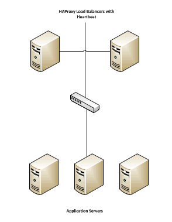
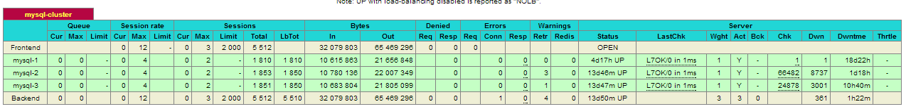
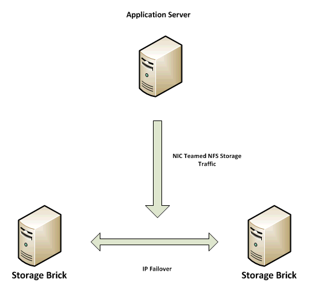

Scaling Across Multiple Machines¶
This document will cover the reference architecture for the Nextcloud Scale Out model for a single datacenter implementation. The document will focus on the three main elements of an Nextcloud deployment:
- Application layer
- Database Layer
- Storage Layer
At each layer the goal is to provide the ability to scale, and providing a high availability while maintaining the needed level of performance.
Application Layer¶
For the application layer of this reference architecture we used Oracle
Enterprise Linux as the front end servers to host the Nextcloud code. In this
instance we made httpd a permissive domain, allowing it to operate within the
SELinux environment. In this example we also used the standard directory
structure placing the Nextcloud code in the Apache root directory. The
following components were installed on each application server:
- Apache
- PHP 5.6.x
- PHP-GD
- PHP-XML
- PHP-MYSQL
- PHP-CURL
Also required is the PHP smbclient module or smbclient (see SMB/CIFS).
It is also worth mentioning that the appropriate exceptions where made in the firewall to allow the Nextcloud traffic (for the purpose of testing we enable both encrypted SSL via port 443 and unencrypted via port 80).
The next step was to generate and import the needed SSL certificates following the standard process in the OEL documentation.
The next step is to create a scalable environment at the application layer, which introduces the load balancer. Because the application servers here are stateless, simply taking the configuration above and replicating (once configured with storage and database connections) and placing behind a load balancer will provide a scalable and highly available environment. For this purpose we chose HAProxy and configured it for HTTPS traffic following the documentation found here http://haproxy.1wt.eu/#doc1.5
It is worth noting that this particular load balancer is not required, and the use of any commercial load balancer (i.e. F5) will work here. It is also worth noting that the HAProxy servers were setup with a heartbeat and IP Shift to failover the IP address should one fail.
Database Layer¶
For the purposes of this example, we have chosen a MySQL cluster using the NDB Storage engine. The cluster was configured based on the documentation found here http://dev.mysql.com/doc/refman/5.1/en/mysql-cluster.html with a sample looking like this:

Taking a closer look at the database architecture, we have created redundant MySQL NDB Management nodes for redundancy and we have configured 3 NDB SQL/Storage nodes across which we are able to spread the database traffic. All of the clients (Nextcloud Application Servers) will connect to the database via the My SQL Proxy. It is worth noting that MySQL proxy is still in beta and that using another load balancing method like HAProxy or F5 is supported, in that you will be distributing traffic among the various SQL/Storage nodes. Here, we simply swap out the MySQL Proxy for a properly configured HAProxy giving us the following:
In this example we have also added a second HAProxy server with Heartbeat to prevent any single point of failure. We have also implemented NIC bonding to load balance the traffic across multiple physical NICs.
Storage Layer¶
Storage was deployed using the Red Hat Storage server with the GlusterFS (pre-configured as part of the Red Hat Storage Server offering).
The Red Hat Storage Servers where configured based on documentation found here https://access.redhat.com/site/documentation/en-US/Red_Hat_Storage/2.0/html/Administration_Guide/Admin_Guide_Part_1.html
For the purposes of scale and high availability we configured a distributed replicated volume with IP Failover. The storage was configured on a separate subnet with bonded NICs at the application server level. We have chosen to address the storage using NFS, and for high availability we have chosen to implement IP Failover of the storage as documented here https://access.redhat.com/site/documentation/en-US/Red_Hat_Storage/2.0/html/Administration_Guide/ch09s04.html
We chose to deploy the storage in this fashion to address both HA and extensibility of the storage, along with managing performance by simply adding additional bricks to the storage volume, back-ended by additional physical disk.
It is worth noting that several options are available for storage configuration (such as striped replicated volumes). A discussion around the type of IO performance required and the needed HA configuration needs to take place to understand the best possible option here.
If we add up the parts, we have the following:
- An application layer that supports dynamic expansion through the addition of additional servers and provides HA behind a load balancer
- A database layer that can also be scaled through the addition of additional SQL/Storage nodes and will provide HA behind a load balancer
- A storage layer that can dynamically expand to meet storage needs, will scale based on backend hardware, and provides HA via IP Failover


{kind=link}
{kind=link}
{kind=link}
{kind=link}